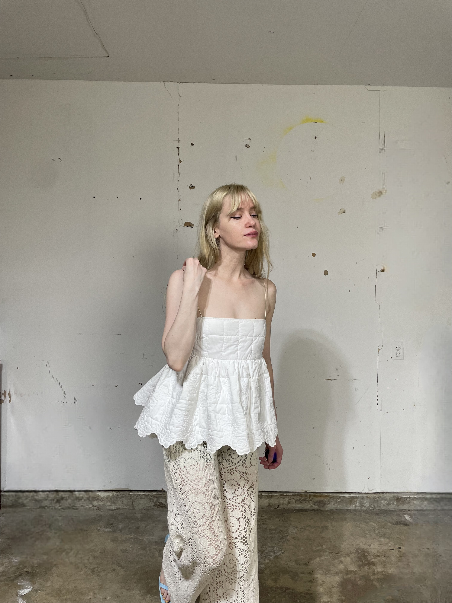
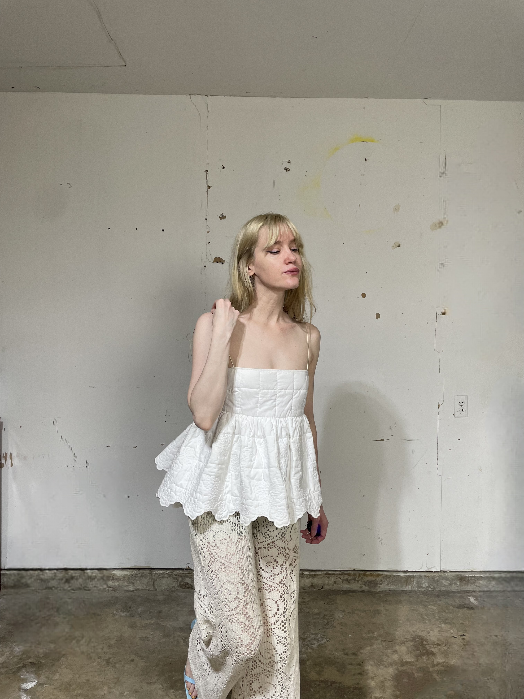
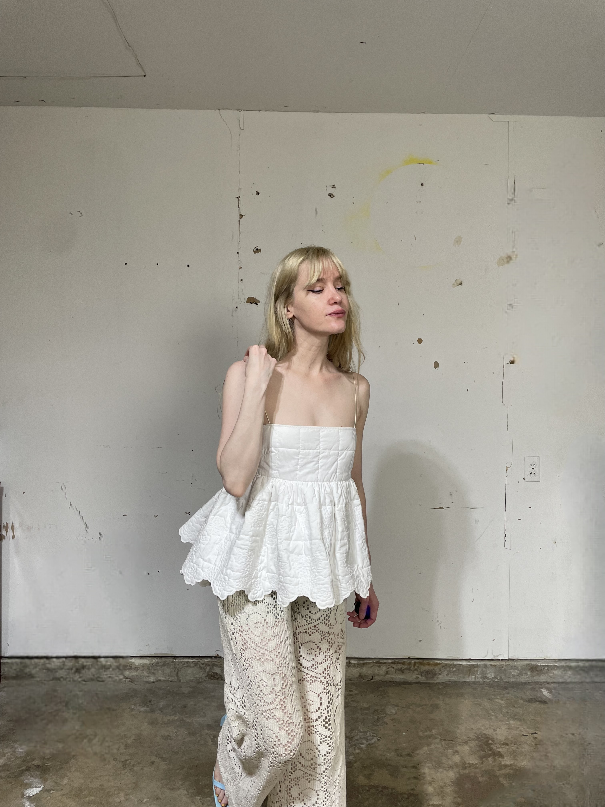
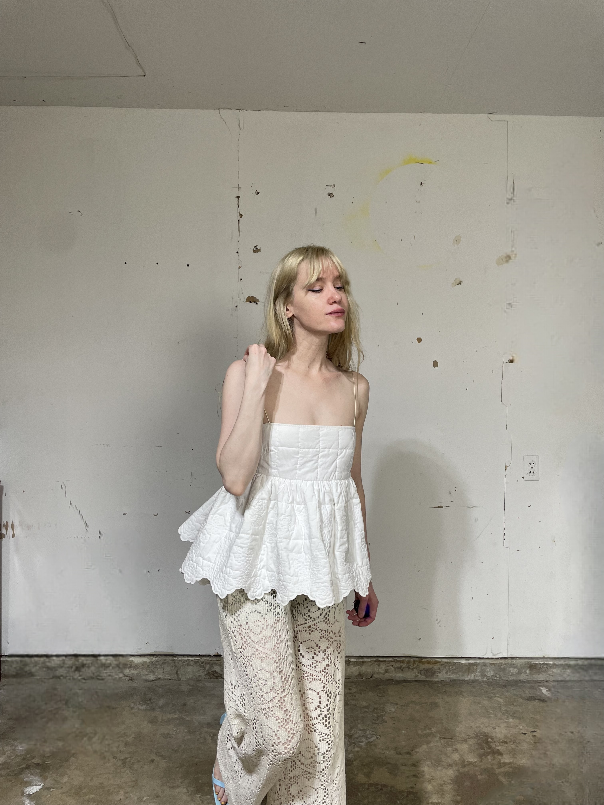

This is one of those tops that's so perfect on, but impossible to capture all the details in a photo. I stole this from my twin sister while I was staying with her in Hamburg and I really want to get one of my own!
 


